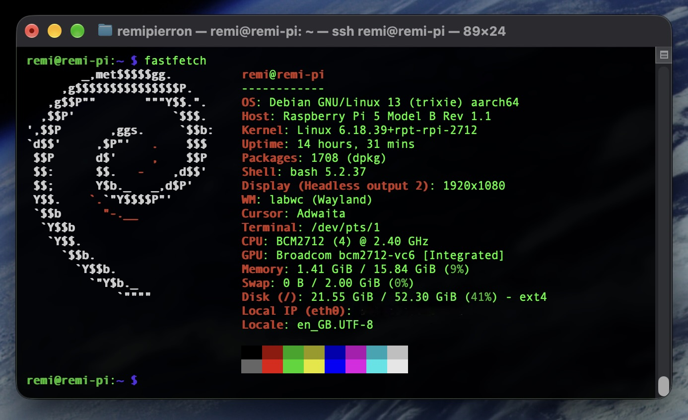

En parallèle de mes projets personnels (veille tech, suivi de plantes, CaféTracker...), j'ai transformé un Raspberry Pi 5 en petit serveur domestique capable de les faire tourner en continu, sans dépendre de mon ordinateur principal. Chaque projet vit dans son propre conteneur Docker, accessible depuis mon réseau personnel via un VPN, et le tout est surveillé et documenté comme une vraie infrastructure, à échelle réduite.
L'objectif était de disposer d'une machine allumée en permanence, économe en énergie, capable d'héberger
plusieurs applications indépendantes les unes des autres. J'ai installé Debian 13 (arm64) sur le Raspberry
Pi 5 et mis en place une administration entièrement à distance : accès SSH et VPN maillé avec Tailscale
pour joindre la machine depuis n'importe où sans exposer le moindre port sur Internet, VNC (wayvnc) gardé
désactivé par défaut et lancé seulement au besoin. Chaque projet est ensuite packagé et lancé via Docker
Compose selon une convention commune (~/docker/appN/...), avec un port dédié et des limites de
ressources adaptées à une carte à 16 Go de RAM (quotas mémoire, systèmes de fichiers en lecture seule et
restrictions de privilèges quand c'est pertinent). J'ai ajouté Netdata pour suivre en temps réel la charge
CPU, la mémoire et le stockage d'une machine aux ressources contraintes, et activé les outils GPIO/I2C pour
interfacer un capteur BME280 dans le cadre d'un projet de prédiction météo de pièce. J'ai également testé
l'inférence locale de modèles de langage avec Ollama pour le projet de veille tech, avant de basculer vers
une API cloud (Mistral) une fois le coût en ressources jugé trop élevé pour le Pi. Enfin, je tiens à jour
une documentation unique de l'état de la machine (matériel, réseau, services, ports exposés) pour que le
serveur reste maintenable dans le temps.
Ce projet m'a permis de développer des compétences d'administration système Linux sur architecture ARM64, avec la gestion de services systemd et le durcissement d'un accès distant (SSH, VPN Tailscale plutôt que des ports ouverts publiquement). J'ai renforcé ma maîtrise de Docker et Docker Compose pour orchestrer plusieurs applications indépendantes sur une même machine, avec des contraintes de ressources et des options de sécurisation des conteneurs. J'ai également acquis des compétences en interfaçage matériel (GPIO, I2C) avec un capteur physique, en supervision/observabilité avec Netdata, et développé mon sens du compromis technique en arbitrant entre inférence de modèles de langage en local et via une API cloud selon les ressources disponibles. Enfin, ce projet m'a appris la rigueur de documentation d'une infrastructure personnelle, pour qu'elle reste compréhensible et évolutive même après plusieurs mois.